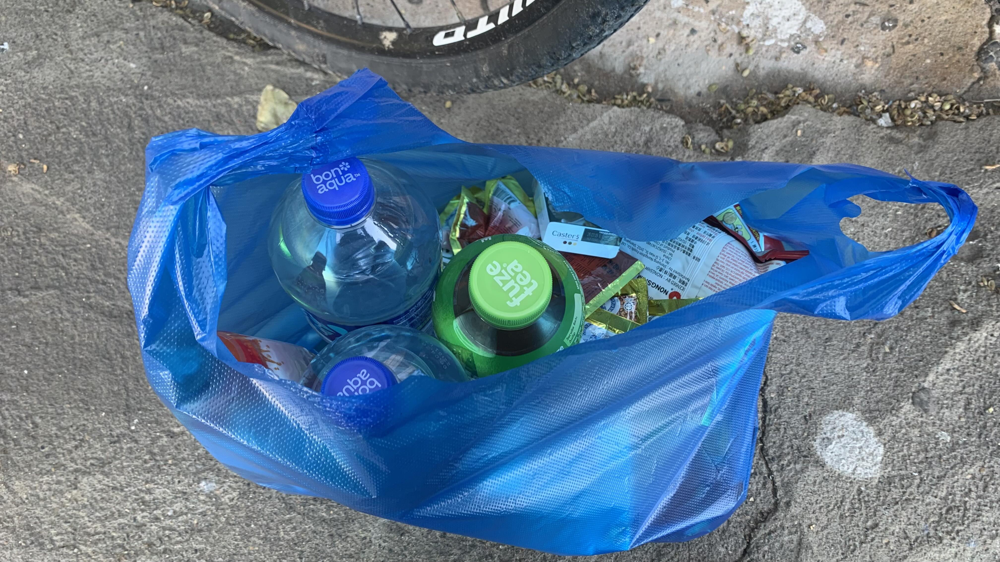
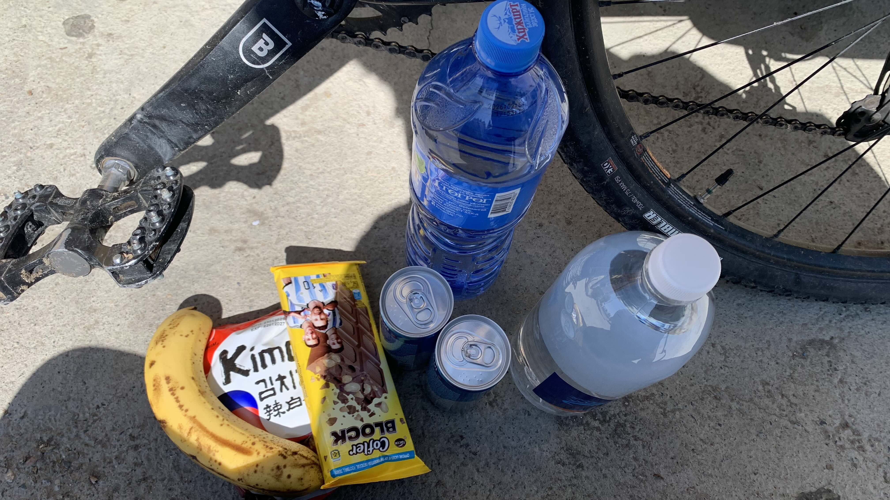
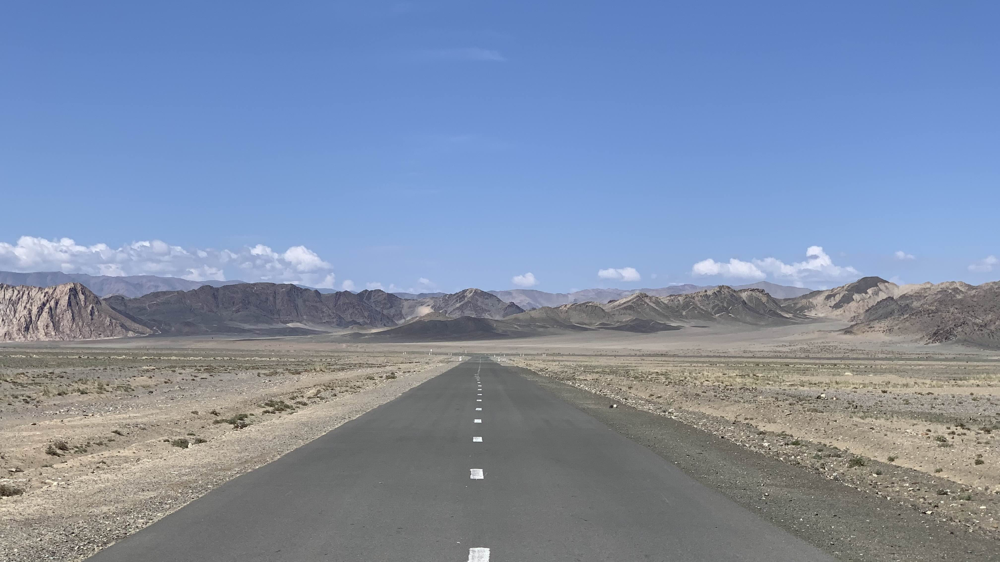
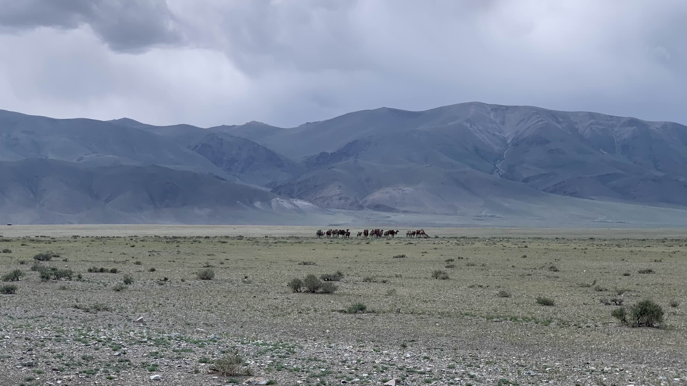
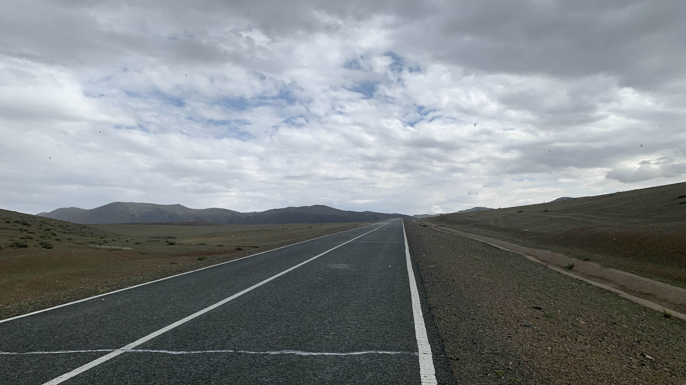
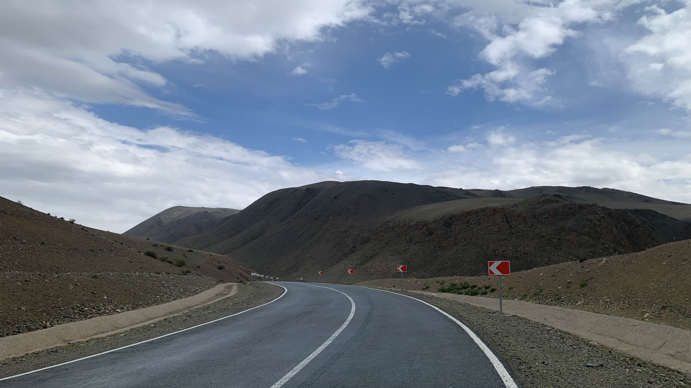
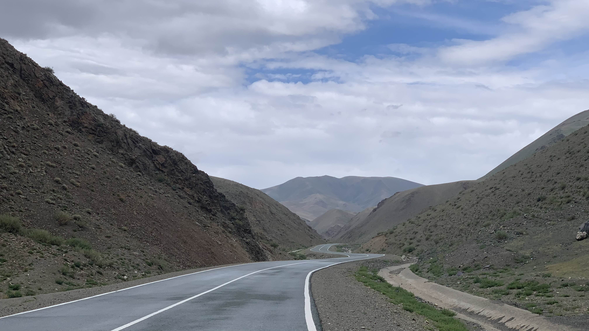
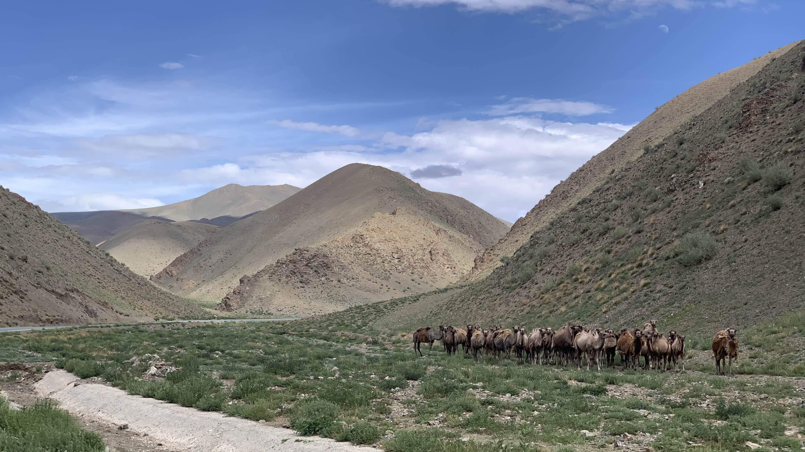
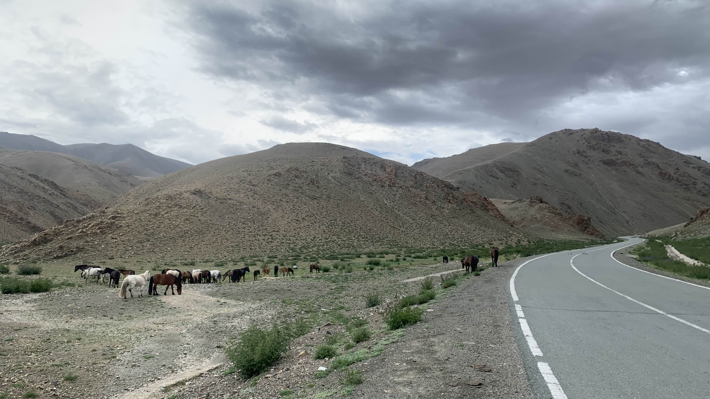
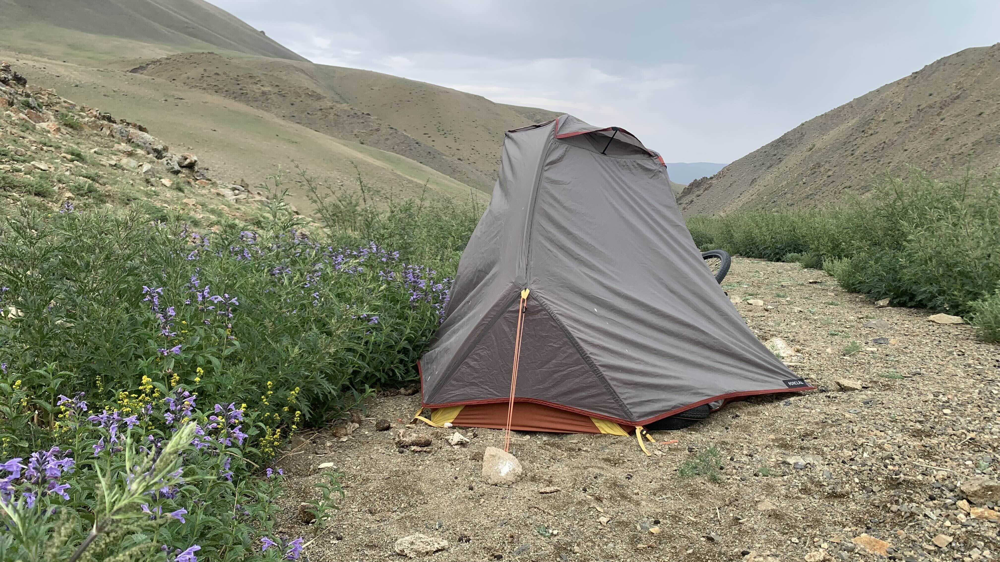

k-Day 111｜跟著馬群走

由曼罕往南走，地圖上有一百多公里的空白，公路最高點大約是兩千八百多公尺。吹的是逆風，風速依然一片橘紅色。安排了二加一天的食物和飲水，避免困在路上沒飯吃。

看著袋子裡的食物，仍然有些不安，又到對面超市買了香蕉、巧克力和礦泉水，結帳前多抓了一包泡麵。

又回到出城的路，對於眼前這片山谷產生革命情感，畢竟是用雙腳走了兩天的。

前天從阿爾泰直接跨到這裡，氣溫顯著上升，景色也瞬間變成平坦的礫石灘。除了偶爾出現的駱駝群，連路過的車輛都少得令人擔心。

微微的順風推著二十三號的屁股，沒多久就進入山谷。身後的風尚未減弱，前方身體突然撞上一道隱形風牆。
調整成爬坡姿勢，踩著踩著，手機螢幕上滴了兩滴水滴。
認份地穿上防水外套，一團白色的雪花掉在袖口瞬間融化。下雪啦？正當這麼想著，雪勢越來越大，似乎又不是雪，軟軟的雪花只下了幾片，黑色外套的袖口接住許多小小圓型的冰球。抬頭看了看眼前的景象，左右兩邊都是山，縫隙中的灰雲垂下整片小冰球，小球不斷往地面撞，在山谷裡發出巨大的聲響。
怎麼說呢，很有種草間彌生無限鏡廳加上音效的進化版。
現在不是興奮的時候，肺很喘，頭也好脹。防水外套經歷這幾個月的折磨，基本已經濕透了。遠處盡頭的天空還有一點藍色，先遠離這片下著冰霰的灰雲。

好喘啊，怎麼回事呢？明明是下坡路，為什麼踩得這麼辛苦？

跟前面開闊的戈壁不同，周遭類似兩排綠色軟糖夾縫中塞進混著藍白灰的洗筆水色，下方一條窄窄的柏油通道隨著軟糖的弧度蜿蜒。

較為空曠的路肩出現一群駱駝，仔細觀察他們活動的地方，確實能夠避開山谷正面吹來的風。唯一的缺點大概是地上的駱駝屎尿，味道相當難聞。

斷然放棄這個地點，又往前騎了一小段路，山坡上出現馬群。
馬們看到我有些戒備，開始沿著陡坡往高處奔跑。原以為只有山羊會爬上斜坡，沒想到體型巨大的馬也能在傾斜的山谷狂奔。
努力地追上他們，有預感會出現適合的營地。
幸好這些馬跑得並不快，偶爾還會回過頭觀察我。

跟著他們拐進公路旁的山谷凹地，剛好可以阻擋谷風，距離公路稍遠，完美躲避車輛視線。除了糞便和蒼蠅多了點，沒有其他缺點。
高處停著一輛卡車，觀察了許久，沒有動靜。搭好帳篷躲進去，外面下著雨。明天又會睡在哪裡呢？
今日花費： 糧食飲水 73500+51000元